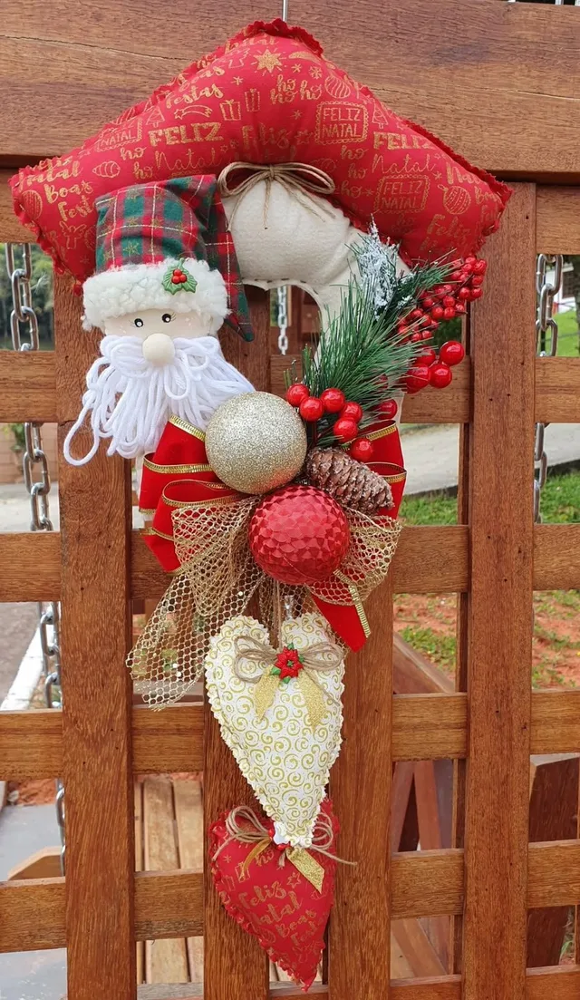
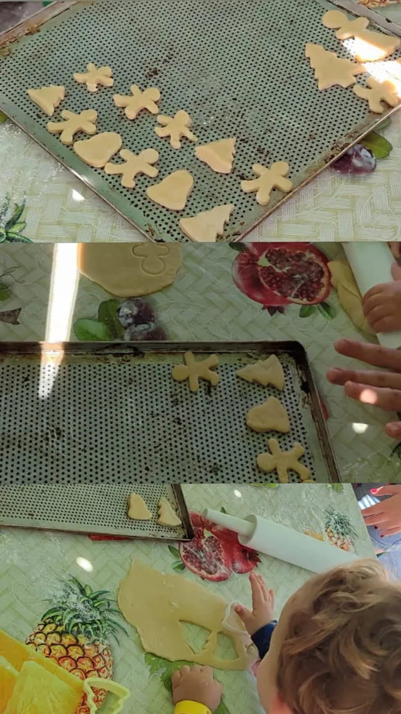
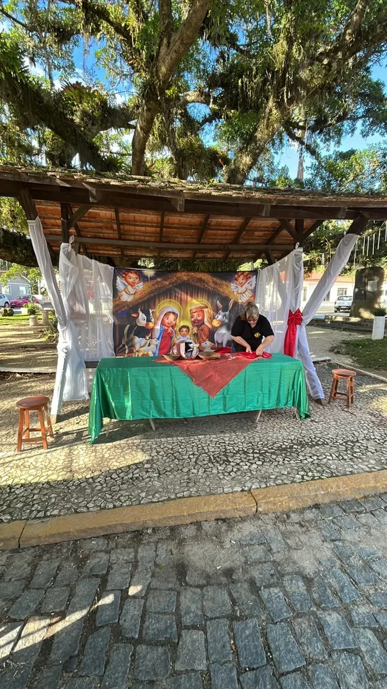
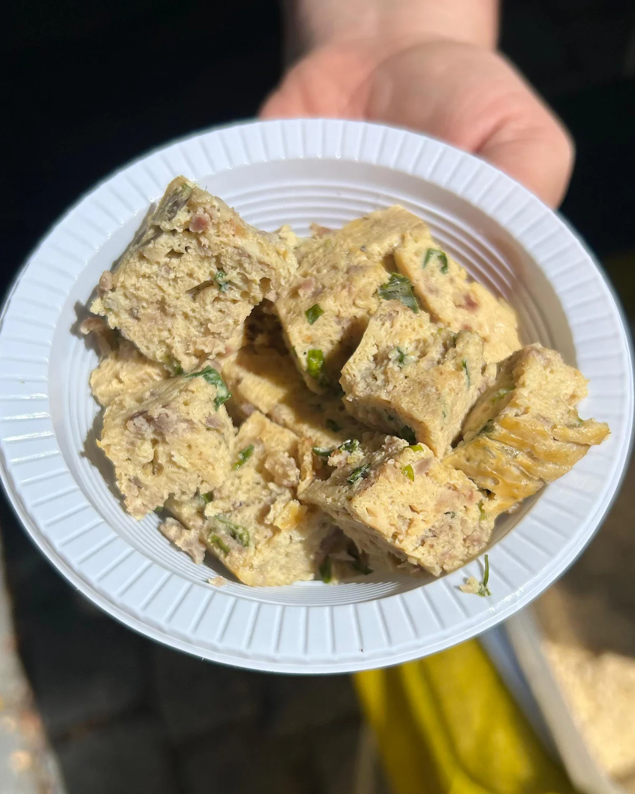
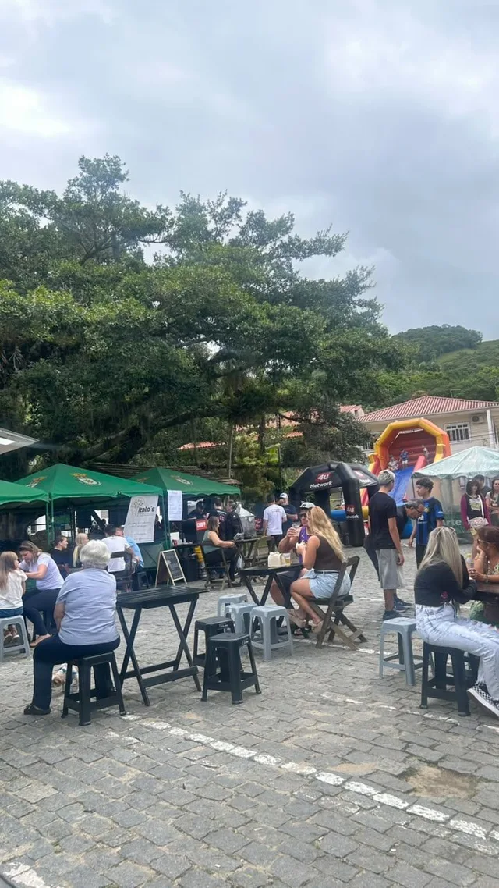
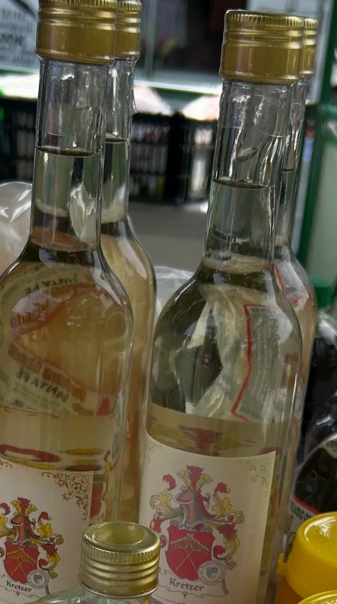
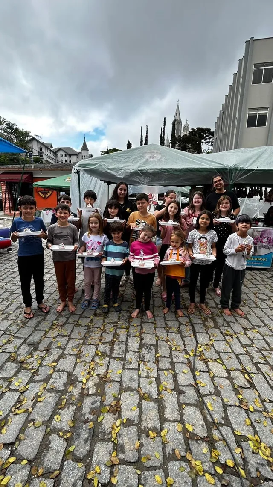
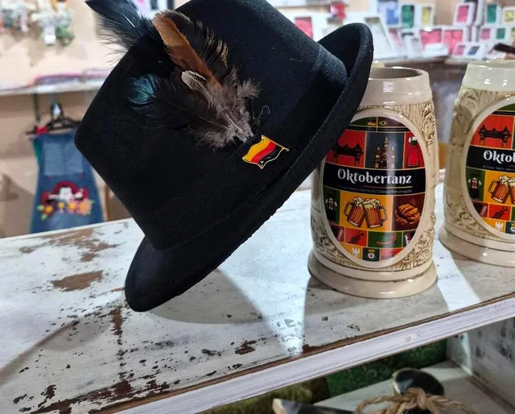
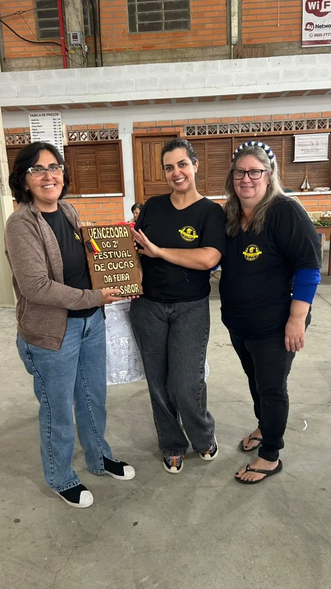
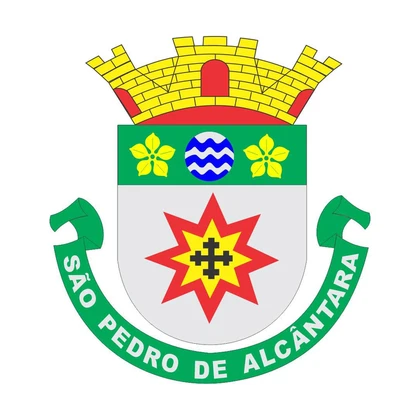

Fim de ano na praça
Novembro tem feira em dobro. E dezembro fecha o ano com a Feira de Natal.
-
14nov
Feira de novembro
Sábado, 14 de novembro
-
28nov
Feira extra
Sábado, 28 de novembro
-
12dez
Feira de Natal
Sábado, 12 de dezembro



Nossa história
Começou em junho de 2010, com a vontade de Marli e Nilzabete de dar lugar a quem faz com as próprias mãos.
Mais de uma década depois, a Feira Arte e Sabor reúne a cultura, o artesanato e a gastronomia de São Pedro de Alcântara.
Hoje a feira é ponto de encontro, de conversa e de muita alegria. Ali, a gente conhece gente e faz amizade que leva pra vida.
Recheio alemão
O recheio é patrimônio imaterial de São Pedro de Alcântara e de Santa Catarina.
Receita de família, passada de geração em geração. Na feira, ele tem lugar de honra.

O que você encontra
Artesanato feito à mão
25 expositores mostrando o que produzem, com venda na hora e encomendas.
Sabores de base alemã
A gastronomia local que é a cara da cidade.
Música ao vivo e dança
Apresentações que fazem a praça virar palco.
Oficinas abertas
Pintura de casca de ovo para a Osterbaum, bolachas de Natal e artesanato, feitas pelos próprios feirantes.
Encomendas
Direto com quem produz.




- 2010desde
- 25expositores
- 2º sábadotodo mês
- 9h às 17ho dia inteiro
Tradição e cultura
A cultura de base alemã vive na feira. Está na Osterbaum da praça, nas bolachas de Natal e no nosso Festival de Cucas, que já teve duas edições de sucesso.

Cultura que cresce com apoio
A feira não para de crescer. Com a Lei Paulo Gustavo, criamos o projeto Brincadeiras Através das Gerações, que reuniu avós, pais e filhos brincando juntos. Com a Lei Aldir Blanc, garantimos os músicos em 2025 e mais conforto para quem visita.
Contamos com o apoio da Prefeitura de São Pedro de Alcântara e da Epagri.

Prefeitura de São Pedro de AlcântaraQuem está à frente
Marli e Nilzabete tocam a feira desde o primeiro dia, de forma voluntária. É o cuidado delas que mantém a Arte e Sabor viva há mais de uma década.
Todo segundo sábado do mês, a praça vira o lugar mais bonito da cidade. Vem viver de perto.
Praça Leopoldo Francisco Kretzer, São Pedro de Alcântara, SCQuer expor ou encomendar? Fale com a gente no direct.
Feiras de 2027
Já anota na agenda. Todas num sábado, das 9h às 17h, na praça.
- 13março
- 10abril
- 8maio
- 12junho
- 10julho
- 14agosto
- 11setembro
- 9outubro
- 13novembro
- 11dezembro